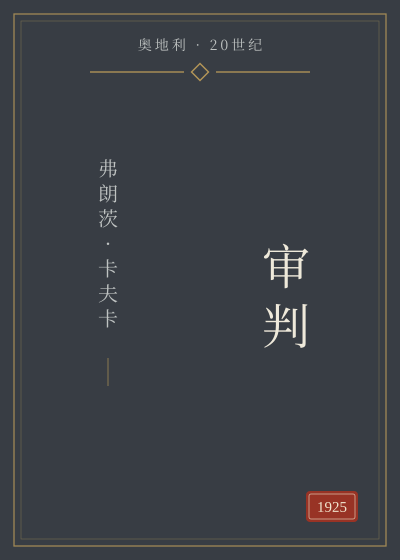

审判
一、基本信息
| 作者 | 卡夫卡 |
|---|---|
| 成书/出版 | 1914—15年写成（未完成）；1925年由布罗德整理出版 Franz Kafka — Encyclopaedia Britannica（百科全书） |
| 国别/地区 | 奥地利 |
| 时代 | 现当代 · 20世纪 |
| 体裁 | 长篇小说（未完成） |
| 语言 | 德语 |

《审判》'被捕—审判—处决'结构图（主题·结构图）
二、创作背景
写作（通说）：1914年8月起笔，1915年1月中止后再未完成——与《变形记》同期交叉写作；全章序列按布罗德1925年整理版流传（章节顺序与'未完成'性是卡夫卡学的核心争论——通说待核）。
出版：卡夫卡遗嘱要求焚毁全部遗稿，布罗德违背遗愿于1925年整理出版《审判》（Britannica Kafka 条：The Trial (1925) — man charged with a nameless crime）。
文学史地位：与《城堡》并列卡夫卡两大未完成长篇——'有罪'成为现代文学的核心词（通说）。
三、内容脉络
逮捕：30岁生日清晨，银行襄理约瑟夫·K在卧室被两个'看守'宣布被捕——罪名？无人告知；法庭在何处？'你自己会明白'。他仍照常上班、会见姨母——'被捕'像一场渗透一切的天气。
初审与迷宫：阁楼上的'法庭'（居民楼里的初审法庭——通说）；K当众陈词，法庭在阁楼的灰尘里;'法院'无处不在——画家蒂托雷里的'经幡'（三种脱身之法：真实无罪、表面无罪、无限拖延——通说）；律师胡尔德与商人布洛克的'跪伏'——诉讼吞噬人生。
教士的寓言（'在法的门前'——通说章节定位待核）：大教堂里，狱方教士讲'乡人与法之门'——门为乡人而设，乡人一生等待，临死获知'这门只为你而开，现在要关上了'（原文意，公有领域）——K的命运的镜子。
结局（未完的完成）：K拒绝交代罪状，被两名看守押往城外采石场，'像一条狗'般被刀捅入心脏——'他知道，人们不会容许他活到寿终'（原文意，待核）——全书在模糊的完成感中终结。
四、主要人物表
| 人物 | 身份 | 说明 |
|---|---|---|
| 约瑟夫·K | 银行襄理 | '无罪的被告'：越抗辩越深陷——理性自信者的全面溃败 |
| 弗丽达 | 酒馆女招待·狱方情妇 | K唯一的'同盟'与最深的背叛（通说解读） |
| 胡尔德律师 | 诉讼律师 | 以'案件'为宗教的冗长者 |
| 布洛克 | 商人·被告 | 五年诉讼的老人——'被告'作为终身职业（通说） |
| 教士 | 狱方神甫 | '在法的门前'寓言的讲述者——K的先知与判官 |
| 画家蒂托雷里 | 御用画家 | 法院体系的'三条路'讲解员 |
五、主题与艺术特点
- '法'的无处不在：逮捕不需要理由、法庭在阁楼——官僚机器的形而上化（Britannica：Kafkaesque 的原始现场）。
- 有罪即存在：教士说'有罪者才能进法庭'（原文意，待核）——存在与罪责的同构（通说）。
- 解读者地狱：'在法的门前'千年没有一个共识读法（通说：interpretation labyrinth）。
- 现代性的心理肖像：职场、求婚、姨母家庭——'正常生活'与'被捕生活'无法区分（通说）。
- 艺术特点：未完成性与开放结局、章节间的非连续、'K'式的匿名主人公（Kafka 与 K——通说待核）。
六、影响与评论
- Britannica（Kafka 条目）：The Trial (1925) — man charged with a nameless crime——'Kafkaesque'的核心文本之一。
Franz Kafka — Encyclopaedia Britannica（百科全书） - 改编：奥逊·威尔斯电影（1962，通说待核）与歌剧、舞台剧。
Franz Kafka — Encyclopaedia Britannica（百科全书） - 法律与政治哲学：'卡夫卡式审判'成为法理学与政治批判的通用语（通说待核）。
Franz Kafka — Encyclopaedia Britannica（百科全书） - 中译：叶廷芳/张荣昌等译本（通说待核）。
Franz Kafka — Encyclopaedia Britannica（百科全书）
七、阅读建议
难点
- 章节顺序：布罗德版 vs 遗稿残篇——不同版本读感不同。
- '在法的门前'独立成篇（1915年曾单独发表——通说待核）——先读懂它。
- K 的暧昧：他无辜还是傲慢？——两种读法都成立。
- 《卡夫卡全集》（河北教育出版社，叶廷芳主编，通说待核）：通行。
- 张荣昌译《审判》（上海译文出版社，通说待核）：另一选择。
- 英文本：Breon Mitchell 新译（Schocken，通说待核）。
先读第1章（逮捕）与'在法的门前'章 → 再读阁楼初审、律师与布洛克 → 最后读结尾（采石场）→ 回头讨论 K 的'罪'。
八、待核实
- 章节顺序学（布罗德版/马尔坎帕斯/帕施利的整理之争）待核。
- '在法的门前'单独发表（1915年《自卫》年鉴说，通说）待核。
- 叶廷芳/张荣昌译本信息待核。
- 威尔斯1962电影改编细节待核。
本页主要来源
卡夫卡的其他收录作品：变形记